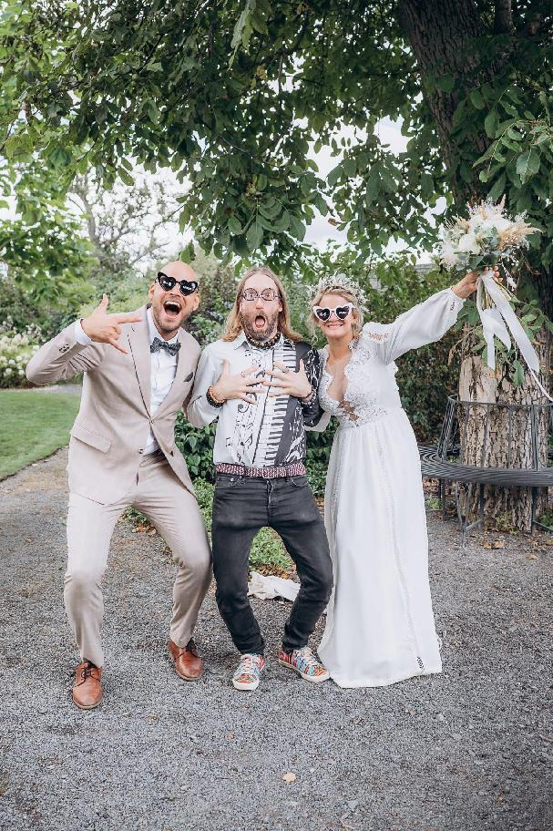

DJ ShaBoy
Jorik Ábel Žito
Vytvářím prostor, ve kterém můžete znovu ožít.
Naplno. Po svém. Doopravdy.
Provázím časoprostorem setkání, obřadů a nocí, které se utrhnou.
Ctím, že podob může být nespočet. Princip je jen jeden.
Nejsem „jen" DJ.
Nepouštím hudbu na pozadí.
Čtu prostor.
Držím směr.
A v pravý moment nechávám věci stát se.
Nejvíc si sednu s lidmi, kteří:
chtějí věci prožít naplno
nebojí se autenticity
mají chuť pustit kontrolu (aspoň na chvíli)
Nejsem pro každého. A je to v pořádku.
Večery se mnou nejsou o dokonalosti.
Jsou skutečné.
A nezapomenutelné.
Lidi se uvolní.
Přestanou se hlídat.
Začnou být spolu.
Nebo víc v sobě.
A najednou to není „akce".
Je to chvíle, která dává smysl.
Chcete zažít něco, co se uloží hluboko?
Ozvěte se.
Zbytek už nějak vymyslíme.